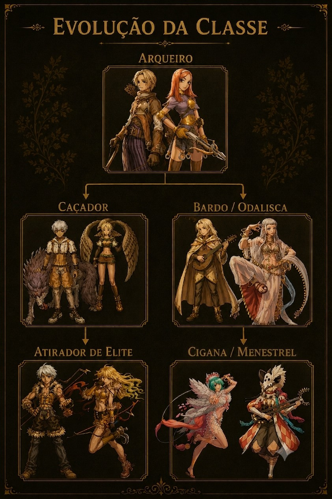
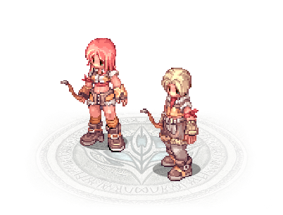

Sobre a Classe
Arqueiros são especialistas em ataques à distância, combinando precisão, agilidade e domínio do arco e flecha. Capazes de eliminar inimigos antes mesmo de serem percebidos, destacam-se pela velocidade e grande habilidade em combate. Ágeis e certeiros, mantêm distância dos adversários enquanto realizam disparos rápidos, tornando-se excelentes em causar dano constante e controlar batalhas à distância.
Função no Jogo
O Arqueiro é especialista em ataques à distância, eliminando inimigos com precisão antes que consigam se aproximar. É ideal para jogadores que gostam de mobilidade e dano consistente.
Características
- Grande alcance de ataque
- Alta precisão
- Boa velocidade de ataque
- Mobilidade elevada
- Especialista em dano à distância
